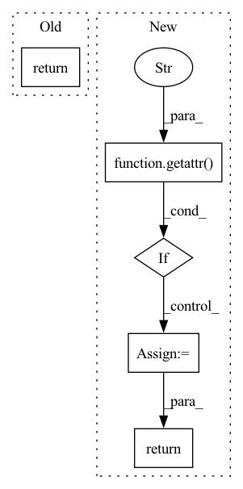

Pattern ID :7580
Before Change
@staticmethod
def _get_doc(cls):
return getattr(cls, "__doc__", "")
@classmethod
def build_cmdline_parser(cls, **kwargs):After Change
from datumaro.components.converter import Converter
base_classes = [Launcher, Extractor, Transform, Importer, Converter]
if any(getattr( t, "__doc__" , "") == doc for t in base_classes):
doc = ""
return doc
@classmethod
def build_cmdline_parser(cls, **kwargs):In pattern: SUPERPATTERN
Frequency: 5
Non-data size: 5
Instances Fragment ID: 25262357
Project Name: openvinotoolkit/datumaro
Commit Name: ed7706ea0f512b00a3b7223d4d22c51d5dcce87e
Time: 2021-06-20
Author: maxim.zhiltsov@intel.com
File Name: datumaro/components/cli_plugin.py
M Class Name: CliPlugin
N Class Name: CliPlugin
M Method Name: _get_doc(1)
N Method Name: _get_doc(1)
M Parent Class:
N Parent Class:
M File Name: datumaro/components/cli_plugin.py
N File Name: datumaro/components/cli_plugin.py
M Start Line: 21
M End Line: 21
N Start Line: 21
N End Line: 31
Before Change
if pretraining:
return self._pretrain_forward(batch)
else:
return self._normal_forward(batch, current_token_id, past_key_values, expansion_factor, generation_dict, encoder_output, return_dict)
def get_encoder_loss(self, context_rnn_state):
After Change
else:
self_attended_context, final_context, context_rnn_state, final_question, question_rnn_state = encoder_output
encoder_loss = None
if self.training and getattr( self.args, "use_encoder_loss" , None) :
encoder_loss = self.get_encoder_loss(context_rnn_state)
return self.decoder(batch, self_attended_context, final_context, context_rnn_state,
final_question, question_rnn_state, encoder_loss, current_token_id, decoder_wrapper=past_key_values,
expansion_factor=expansion_factor, generation_dict=generation_dict)
Fragment ID: 25262358
Project Name: stanford-oval/genienlp
Commit Name: c7ab4370abe4b4545fd58fc1a752dc9831b72ec2
Time: 2020-12-05
Author: gcampagn@cs.stanford.edu
File Name: genienlp/models/general_seq2seq.py
M Class Name: BertLSTM
N Class Name: BertLSTM
M Method Name: forward(8)
N Method Name: forward(9)
M Parent Class: GenieModel
N Parent Class: GenieModel
M File Name: genienlp/models/general_seq2seq.py
N File Name: genienlp/models/general_seq2seq.py
M Start Line: 167
M End Line: 177
N Start Line: 122
N End Line: 132
Before Change
self.running_var = (1 - self.momentum) * self.running_var + self.momentum * batch_var
self.num_batches_tracked += 1
return batch_normalize(x, self.weight, self.bias, batch_mean, batch_var, self.eps)
return batch_normalize(x, self.weight, self.bias, self.running_mean, self.running_var, self.eps)
After Change
batch_mean, batch_var = self.running_mean, self.running_var
// NOTE: this can be precomputed for static inference. if you manually update running_var, you have to reset this
if Tensor.training or getattr( self, "batch_invstd" , None) is None: self.batch_invstd = batch_var.add(self.eps)**-0.5
return batch_normalize(x, self.weight, self.bias, batch_mean, self.batch_invstd)
class Conv2d:
def __init__(self, in_channels, out_channels, kernel_size, stride=1, padding=0, bias=True): Fragment ID: 25262361
Project Name: geohot/tinygrad
Commit Name: a3fc64a58584064a5cf4753159730a810161c877
Time: 2022-08-31
Author: george@comma.ai
File Name: tinygrad/nn/__init__.py
M Class Name: BatchNorm2D
N Class Name: BatchNorm2D
M Method Name: __call__(2)
N Method Name: __call__(2)
M Parent Class:
N Parent Class:
M File Name: tinygrad/nn/__init__.py
N File Name: tinygrad/nn/__init__.py
M Start Line: 23
M End Line: 35
N Start Line: 33
N End Line: 37
Before Change
.. // noqa: DAR201
return get_public_ip()
After Change
.. // noqa: DAR201
if getattr( self, "_public_ip" , None) :
return self._public_ip
else:
self._public_ip = get_public_ip()
return self._public_ip
Fragment ID: 25262360
Project Name: jina-ai/jina
Commit Name: 26354a5e22481b58d4ef94f38cb20cf71cfbe751
Time: 2023-01-25
Author: joan.martinez@jina.ai
File Name: jina/orchestrate/orchestrator.py
M Class Name: BaseOrchestrator
N Class Name: BaseOrchestrator
M Method Name: address_public(1)
N Method Name: address_public(1)
M Parent Class: ExitStack,ABC
N Parent Class: ExitStack,ABC
M File Name: jina/orchestrate/orchestrator.py
N File Name: jina/orchestrate/orchestrator.py
M Start Line: 45
M End Line: 45
N Start Line: 49
N End Line: 53
Before Change
.. // noqa: DAR201
return get_internal_ip()
@property
def address_public(self) -> str:After Change
.. // noqa: DAR201
if getattr( self, "_internal_ip" , None) :
return self._internal_ip
else:
self._internal_ip = get_internal_ip()
return self._internal_ip
@property
def address_public(self) -> str: Fragment ID: 25262364
Project Name: jina-ai/jina
Commit Name: 26354a5e22481b58d4ef94f38cb20cf71cfbe751
Time: 2023-01-25
Author: joan.martinez@jina.ai
File Name: jina/orchestrate/orchestrator.py
M Class Name: BaseOrchestrator
N Class Name: BaseOrchestrator
M Method Name: address_private(1)
N Method Name: address_private(1)
M Parent Class: ExitStack,ABC
N Parent Class: ExitStack,ABC
M File Name: jina/orchestrate/orchestrator.py
N File Name: jina/orchestrate/orchestrator.py
M Start Line: 37
M End Line: 37
N Start Line: 37
N End Line: 41